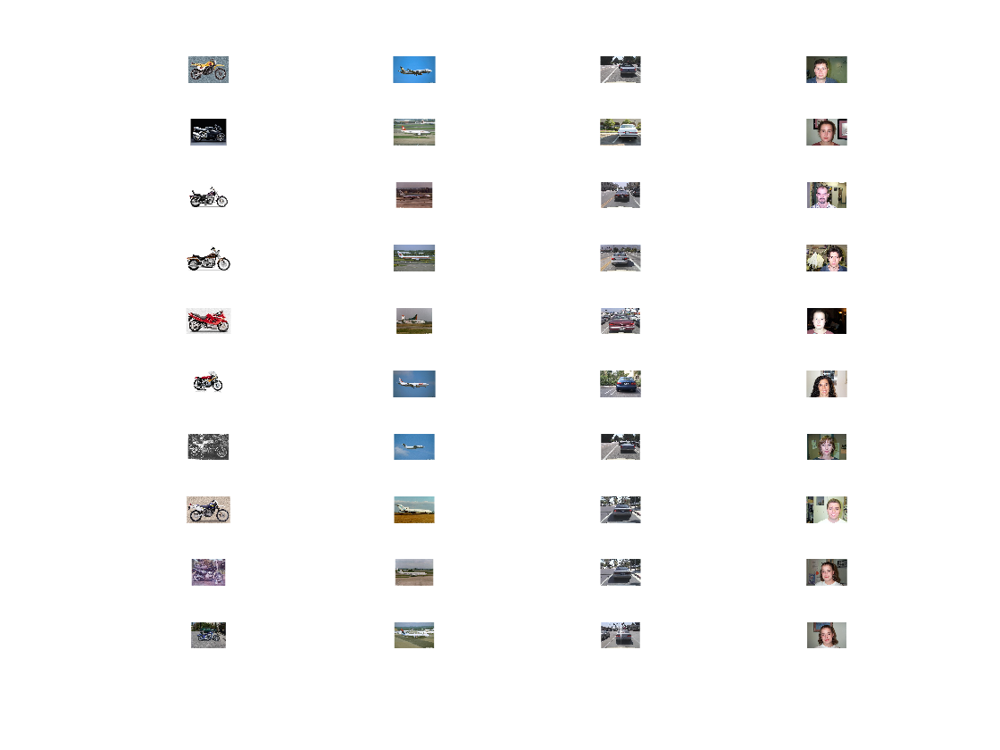

Contents
function histogram_to_classifer()
vocabulary_size = 400; s = 100;
loading H
% load('H_motorbikes'); % for i = 1:1:25 % subplot(5,5,i); % X = H_motorbikes{i}; % histogram(X, 'Normalization', 'count') %// plot normalized histogram % % end % load('H_airplanes'); load('H_motorbikes'); load('H_faces'); load('H_cars'); training_airplanes = zeros(s,vocabulary_size); for i = 1 : s training_airplanes(i,:) = H_airplanes{i}; end training_motorbikes = zeros(s,vocabulary_size); for i = 1 : s training_motorbikes(i,:) = H_motorbikes{i}; end training_faces = zeros(s,vocabulary_size); for i = 1 : s training_faces(i,:) = H_faces{i}; end training_cars = zeros(s,vocabulary_size); for i = 1 : s training_cars(i,:) = H_cars{i}; end
training airplanes
training_label_vector_airplanes = ones(s,1); training_label_vector_airplanes = cat(1,training_label_vector_airplanes , zeros(s,1) ) ; training_label_vector_airplanes = cat(1,training_label_vector_airplanes , zeros(s,1) ) ; training_label_vector_airplanes = cat(1,training_label_vector_airplanes , zeros(s,1) ) ; training_instance_matrix_airplanes = training_airplanes; training_instance_matrix_airplanes = cat(1,training_instance_matrix_airplanes,training_motorbikes); training_instance_matrix_airplanes = cat(1,training_instance_matrix_airplanes,training_faces); training_instance_matrix_airplanes = cat(1,training_instance_matrix_airplanes,training_cars);
training motorbikes
training_label_vector_motorbikes = ones(s,1); training_label_vector_motorbikes = cat(1,training_label_vector_motorbikes , zeros(s,1) ) ; training_label_vector_motorbikes = cat(1,training_label_vector_motorbikes , zeros(s,1) ) ; training_label_vector_motorbikes = cat(1,training_label_vector_motorbikes , zeros(s,1) ) ; training_instance_matrix_motorbikes = training_motorbikes; training_instance_matrix_motorbikes = cat(1,training_instance_matrix_motorbikes,training_airplanes); training_instance_matrix_motorbikes = cat(1,training_instance_matrix_motorbikes,training_faces); training_instance_matrix_motorbikes = cat(1,training_instance_matrix_motorbikes,training_cars);
training cars
training_label_vector_faces = ones(s,1); training_label_vector_faces = cat(1,training_label_vector_faces , zeros(s,1) ) ; training_label_vector_faces = cat(1,training_label_vector_faces , zeros(s,1) ) ; training_label_vector_faces = cat(1,training_label_vector_faces , zeros(s,1) ) ; training_instance_matrix_faces = training_faces ; training_instance_matrix_faces = cat(1,training_instance_matrix_faces,training_motorbikes); training_instance_matrix_faces = cat(1,training_instance_matrix_faces,training_airplanes); training_instance_matrix_faces = cat(1,training_instance_matrix_faces,training_cars);
training faces
training_label_vector_cars = ones(s,1); training_label_vector_cars = cat(1,training_label_vector_cars , zeros(s,1) ) ; training_label_vector_cars = cat(1,training_label_vector_cars , zeros(s,1) ) ; training_label_vector_cars = cat(1,training_label_vector_cars , zeros(s,1) ) ; training_instance_matrix_cars = training_cars ; training_instance_matrix_cars = cat(1,training_instance_matrix_cars,training_motorbikes); training_instance_matrix_cars = cat(1,training_instance_matrix_cars,training_faces); training_instance_matrix_cars = cat(1,training_instance_matrix_cars,training_airplanes);
make model
best_motorbikes = train(training_label_vector_motorbikes', sparse(training_instance_matrix_motorbikes'), '-C -s 0'); model_motorbikes = train(training_label_vector_motorbikes', sparse(training_instance_matrix_motorbikes'), sprintf('-c %f -s 0', best_motorbikes(1))); % use the same solver: -s 0 best_airplanes = train(training_label_vector_airplanes', sparse(training_instance_matrix_airplanes'), '-C -s 0'); model_airplanes = train(training_label_vector_airplanes', sparse(training_instance_matrix_airplanes'), sprintf('-c %f -s 0', best_airplanes(1))); % use the same solver: -s 0 best_faces = train(training_label_vector_faces', sparse(training_instance_matrix_faces'), '-C -s 0'); model_faces = train(training_label_vector_faces', sparse(training_instance_matrix_faces'), sprintf('-c %f -s 0', best_faces(1))); % use the same solver: -s 0 best_cars = train(training_label_vector_cars', sparse(training_instance_matrix_cars'), '-C -s 0'); model_cars = train(training_label_vector_cars', sparse(training_instance_matrix_cars'), sprintf('-c %f -s 0', best_cars(1))); % use the same solver: -s 0
% model_motorbikes = train(training_label_vector_motorbikes, sparse(training_instance_matrix),'-s 6'); % model_airplanes = train(training_label_vector_airplanes, sparse(training_instance_matrix),'-s 6'); % model_faces = train(training_label_vector_faces, sparse(training_instance_matrix),'-s 6'); % model_cars = train(training_label_vector_cars, sparse(training_instance_matrix),'-s 6'); % 5 -- L1-regularized L2-loss support vector classification\n" % model_motorbikes = train(training_label_vector_motorbikes, sparse(training_instance_matrix),'-s 5'); % model_airplanes = train(training_label_vector_airplanes, sparse(training_instance_matrix),'-s 5'); % model_faces = train(training_label_vector_faces, sparse(training_instance_matrix),'-s 5'); % model_cars = train(training_label_vector_cars, sparse(training_instance_matrix),'-s 5'); model_motorbikes = train(training_label_vector_motorbikes, sparse(training_instance_matrix_motorbikes)); model_airplanes = train(training_label_vector_airplanes, sparse(training_instance_matrix_airplanes)); model_faces = train(training_label_vector_faces, sparse(training_instance_matrix_faces)); model_cars = train(training_label_vector_cars, sparse(training_instance_matrix_cars)); % % save('model','model'); % % load('model') % model
* optimization finished, #iter = 9 Objective value = -80.823207 nSV = 252 * optimization finished, #iter = 9 Objective value = -72.147454 nSV = 236 *. optimization finished, #iter = 10 Objective value = -85.089299 nSV = 262 *. optimization finished, #iter = 10 Objective value = -94.557829 nSV = 287
make predict
load('H_test'); test_instance_matrix = zeros(200,vocabulary_size); for i = 1 : 200 test_instance_matrix(i,:) = H_test{i}; end % test_label_vector = cat(1,ones(50,1) ,zeros(150,1) ) ; test_label_vector = zeros(200,1); [predict_label, accuracy, prob_estimates] = predict(test_label_vector, sparse(test_instance_matrix), model_motorbikes ); % show_all_images(predict_label); [sortvals, sortidx] = sort(prob_estimates,'descend'); motorbikes = sortidx(1:10); % % [predict_label, accuracy, prob_estimates] = predict(test_label_vector, sparse(test_instance_matrix), model_airplanes); % show_all_images(predict_label); [sortvals, sortidx] = sort(prob_estimates,'descend'); airplanes = sortidx(1:10); % [predict_label, accuracy, prob_estimates] = predict(test_label_vector, sparse(test_instance_matrix), model_faces); % show_all_images(predict_label); [sortvals, sortidx] = sort(prob_estimates,'descend'); faces = sortidx(1:10); % [predict_label, accuracy, prob_estimates] = predict(test_label_vector, sparse(test_instance_matrix), model_cars); % show_all_images(predict_label); [sortvals, sortidx] = sort(prob_estimates,'descend'); cars = sortidx(1:10); % % %% visualize publish_to_html(motorbikes,airplanes,cars,faces);
Accuracy = 78.5% (157/200) Accuracy = 77.5% (155/200) Accuracy = 73.5% (147/200) Accuracy = 84.5% (169/200)
end